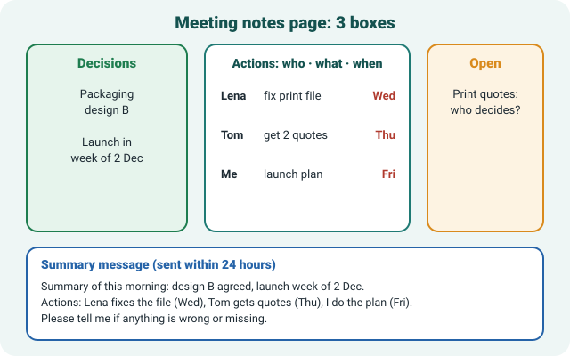

K1 · Listening and understanding › Level 3 Secure
Listen in meetings and confirm actions with a summary message
This lesson completes Sheet 2: Meeting notes page. Print template.
1. Objectives
- Take meeting notes in 3 boxes: decisions, actions (who, what, when), open questions.
- Write a meeting summary of under 80 words for everyone to confirm.
2. Retrieval warm-up
- Which two questions are the 4 priority boxes based on?
- When two people both give you urgent work, who do you ask to choose the order?
Answers
- If it is late, is the impact high or low? Is the deadline near or far?
- Your direct manager.
Review: Prioritising competing tasks.
3. Explanation
After a meeting, each person often remembers it differently. A week later, a task is late because "I thought you were doing it". A new team member can help the whole team by listening carefully and confirming the actions.
During the meeting, write in 3 boxes:

- Decisions: what the group agreed. Keep it short, in the chair's meaning.
- Actions: each line has who, what and when. If one is missing, it is not yet an action.
- Open questions: what is not yet decided, and who will answer.
Listen for signals. Phrases like "Let's go with that" or "Can you handle this part?" usually mark a decision or a task. When you hear one, ask straight away: "What's the deadline for that part?"
After the meeting, send a summary within 24 hours.
A meeting summary message
- DecisionsOne sentence.
- ActionsOne line per person: name, task, deadline.
- Open questionsWho will answer, and when.
- Ask for confirmation"Please tell me if anything is wrong or missing."
Send it to the group chat or email thread that all attendees use. If the chair already sends official minutes, use those. Then just copy your own actions onto Sheet 1.
A note on confidentiality. Meeting content may be internal information. Send it only to attendees, through the channel your workplace uses.
4. Workplace example
Hypothetical scenario. Omar is a new marketing assistant at a food manufacturer. He attends a 30-minute meeting about new packaging.
In the meeting, the department head says: "Let's go with design B. Lena, can you fix the print file? Tom, ask a few printers." Omar asks: "When will Lena's file be ready, and how many quotes does Tom need?" The head replies: "Lena by Wednesday. Tom, two quotes before Thursday."
That afternoon, Omar sends a summary like Figure 1. Tom replies: "Could I send the quotes on Friday? The printer is closed on Thursday." The head agrees straight away in the chat.
Why this works: The question during the meeting turns "a few printers" into a number and a deadline. The summary brings a problem to light early, while there is still time to adjust.
5. Practice
Hypothetical scenario. You have just joined the HR team of a pharmacy chain. Your meeting notes say: "Hire 3 more pharmacists for 2 new stores. Grace posts the job ad this week. I handle the interview schedule. Starting pay not agreed, waiting for the director. Stores open on 15 December."
Rearrange the notes into the 3 boxes. Write a summary message of under 80 words.
Hint 1
The task "I handle the interview schedule" is missing which of who, what and when?
Hint 2
Starting pay is an open question. Write down who will answer it.
Model answer
- Decisions: hire 3 pharmacists for 2 new stores, opening on 15 December.
- Actions: Grace posts the ad by Friday this week. I draw up the interview schedule; deadline to be confirmed.
- Open: starting pay, waiting for the director.
Message: "Summary of this morning's meeting: we're hiring 3 pharmacists for 2 new stores, opening 15 December. Grace posts the ad by Friday. I'll draw up the interview schedule. Could I send a draft next Monday? Starting pay is waiting for the director. Please tell me if anything is wrong or missing."
(About 60 words. The content is hypothetical.)
6. Self-check
Choose an answer. Every option has an explanation.
Question 1. Which note is complete enough to go in the Actions box?
-
Not quite. There is no owner and no deadline. It can easily become a task nobody takes.
-
Correct. Correct. It has who, what and when.
-
Not quite. It shows urgency, but has no owner and no specific deadline.
Question 2. In a meeting, your team leader says: "You handle the survey, OK?" What should you do right away?
-
Not quite. After the meeting it is hard to reach everyone again. Asking now is quicker and clearer.
-
Correct. Correct. The question turns a vague task into a clear result and deadline.
-
Not quite. This is a task, so it goes in the Actions box, with an owner and a deadline.
Question 3. When should you send the meeting summary?
-
Correct. Correct. People still remember the meeting, so mistakes are easy to fix and problems show up early.
-
Not quite. By then it is too late to fix any misunderstanding.
-
Not quite. Usually nobody asks, until a task is late.
Question 4. The meeting discussed new prices that are not yet public. Who do you send the summary to?
-
Not quite. Unannounced prices are internal information. Send only to attendees.
-
Correct. Correct. Everyone who needs it gets it, and nothing leaks outside.
-
Not quite. Personal channels may break your workplace's confidentiality rules.
7. Reflection
- In your last meeting, was there a task with no clear owner or deadline? What happened next?
- Which question could you ask during a meeting, and still be polite?
8. Real-world application
In the next 7 days, take notes for one meeting on Sheet 2. If the team has no official minutes, ask the chair first, then send your summary. Note who corrected or added anything.
9. Metadata
| skill | K1 · Listening and understanding |
|---|---|
| level | Level 3 · Secure |
| group | N3 |
| framework_map | WEF: Empathy and active listening; CSfW: 2a Communicate for work; SkillsFuture CCS: Communication; LifeComp: S2 Communication (reference only) |
| original | Vietnamese version |
| updated | 2026-11-14 |
Finish the lesson
Mark it as done and the site suggests reviews after 1, 3 and 7 days. The data stays on your device only.
Suggested reviews: